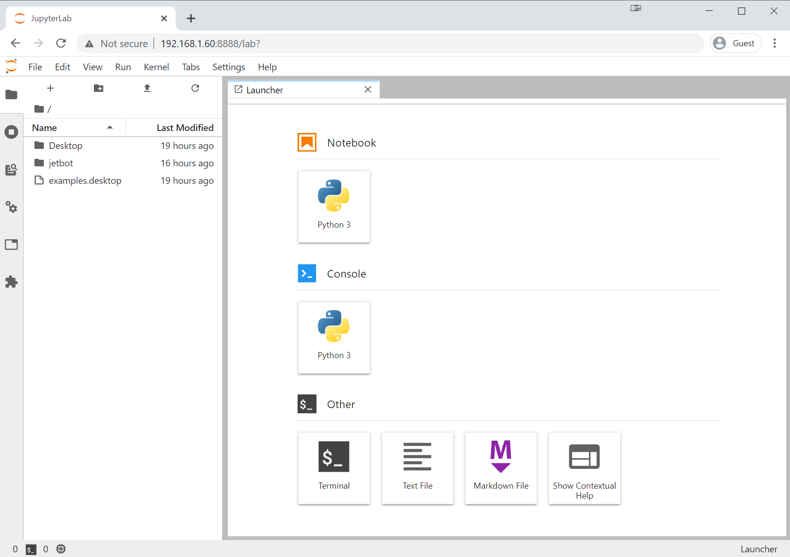

Software Setup (SD Card Image)
Note
JetBot was originally designed with Jetson Nano Developer Kit, which was discontinued.
For those newly starting, we recommend planning the JetBot assembly with Jetson Orin Nano 8GB Developer Kit.
The Bill of Materials for Orin version of JetBot is laid out on Bill of Materials (Orin) page.
Please note that, currently, the software for the Orin version of JetBot is still work in progress.
This page details how to set up JetBot using the pre-built JetBot SD card image. You may prefer this option if you are new to Jetson Nano, and do not have an existing SD card configured.
Step 1 - Download the pre-built JetBot SD card image
Download the pre-built JetBot SD card image from the table below. Make sure to select the version that matches the Jetson you're using (for example Jetson Nano 2GB).
Atention
10/4/2024:
Recently, you may face permission issues when attempting to download the files hosted on Google Drive below.
We hope to resolve these issues soon.
Latest Release
| Platform | JetPack Version | JetBot Version | Download | MD5 Checksum |
|---|---|---|---|---|
| Jetson Nano 2GB | 4.5 | 0.4.3 | jetbot-043_nano-2gb-jp45.zip | e6dda4d13b1b1b31f648402b9b742152 |
| Jetson Nano (4GB) | 4.5 | 0.4.3 | jetbot-043_nano-4gb-jp45.zip | 760b1885646bfad8590633acca014289 |
Attention
To use one of the JetBot sdcard images based on JetPack 4.5, you first need to boot your Jetson Nano using a plain JetPack 4.5 SD card image and run through the operating system setup. This will perform a one-time configuration which enables you to use SD card images based on JetPack 4.5 on your device. You can find the original JetPack SD card images here: JetPack SD card image for Jetson Nano 2GB and JetPack SD card image for Jetson Nano (4GB). After doing this procedure once, you can then use the JetPack 4.5 based JetBot SD card images listed above on your device.
Old releases
| Platform | JetPack Version | JetBot Version | Download |
|---|---|---|---|
| Jetson Nano 2GB | 4.4.1 | 0.4.2 | jetbot-042_nano-2gb-jp441.zip |
| Jetson Nano (4GB) | 4.4.1 | 0.4.2 | jetbot-042_nano-4gb-jp441.zip |
| Jetson Nano 2GB | 4.4.1 | 0.4.1 | jetbot-041_nano-2gb-jp441.zip |
| Jetson Nano (4GB) | 4.4.1 | 0.4.1 | jetbot-041_nano-4gb-jp441.zip |
| Jetson Nano (4GB) | 4.3 | 0.4.0 | jetbot_image_v0p4p0.zip |
| Jetson Nano (4GB) | 4.2 | 0.3.2 | jetbot_image_v0p3p2.zip |
Step 2 - Flash JetBot image onto SD card
-
Insert an SD card into your desktop machine
-
Using Etcher, select the image you downloaded above and flash it onto the SD card.
-
Remove the SD card from your desktop machine
Step 3 - Boot Jetson Nano
-
Insert the SD card into your Jetson Nano (the micro SD card slot is located under the module)
-
Connect the monitor, keyboard, and mouse to the Nano
-
Power on the Jetson Nano by connecting the micro USB (for Jetson Nano (4GB)) or USB-C (for Jetson Nano 2GB) charger to the port
Attention
We recommend first booting the Jetson Nano once without the piOLED / motor driver connected.
This way you can check to make sure the system boots properly from the SD card image without worrying about hardware issues. After you've verified that it boots, reconnect the piOLED, double check your wiring, and boot again.
Step 4 - Connect JetBot to WiFi
Next you'll need to connect to WiFi. To reduce memory consumption, we disable the Ubuntu GUI in the latest JetBot SD card image. For this reason, you'll need to use the command line to connect to WiFi.
-
Log in using the user
jetbotand passwordjetbot -
Connect to a WiFi network using the following command
sudo nmcli device wifi connect <SSID> password <PASSWORD>
Your Jetson Nano should now automatically connect to the WiFi at boot and display it's IP address on the piOLED display.
Tip
If you're having trouble figuring out how to get connected to Wi-Fi, check out the Wi-Fi setup page for more detailed instructions
Step 5 - Connect to JetBot from web browser
After your robot is connected to WiFi, you no longer need to have the robot connected by a monitor. You can connect to the robot from your laptop's web browser by performing the following steps
-
Shutdown JetBot using the command line
sudo shutdown now -
Unplug your HDMI monitor, USB keyboard, mouse and power supply from Jetson Nano
-
Power the JetBot from the USB battery pack by plugging in the micro-USB cable
- Wait a bit for JetBot to boot
- Check the IP address of your robot on the piOLED display screen. Enter this in place of
<jetbot_ip_address>in the next command - Navigate to
http://<jetbot_ip_address>:8888from your desktop's web browser. You can do this from any machine on your local network. - Sign in using the password
jetbot.
That's it, you've now accessed JetBot's remote programming environment!
You will be presented with a view similar to the following.

Here you can easily access the JetBot examples! From this point on, when you power on the JetBot, it should automatically connect to WiFi and display it's IP address. So all you need to do is reconnect using your web browser to start programming!
Now that you're finished setting up your JetBot, you're ready to run the examples.